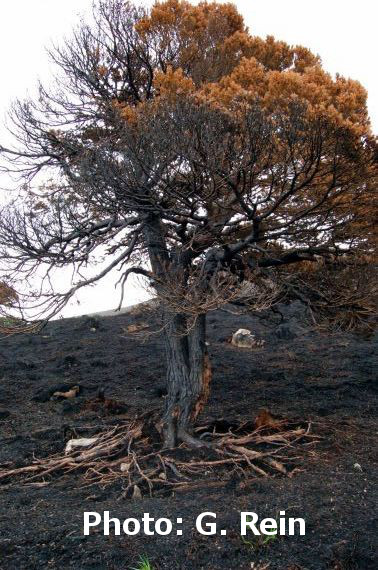

Smouldering is a slow, flame-less form of combustion that can persist for long periods of time. It can spread over extensive areas, spreading through sub-surface layers of soil with high organic matter (e.g. peat, humus, duff).
 When peat is dry smouldering can be initiated by weak sources of heat (e.g. flaming vegetation). Once ignited smouldering fires are difficult to extinguish and can abruptly start flaming fires.
Several of these cause habitat loss, damage to root systems (pictured right) and produce important carbon emissions. Peat fires can affect especially drained peatlands and forests or plantations with a shallow layer of peat.
| Impact | Flame | Temperature (degrees C) | Propagation | Spread Rate (cm/hour) | |
| Flaming | vegetation | yes | 1500 | fast | 100 |
| Smouldering | soil | no | 500-700 | slow | <5 |